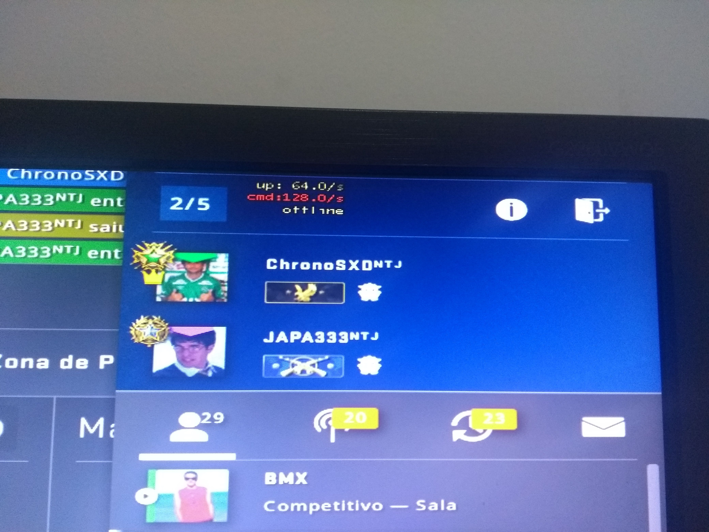
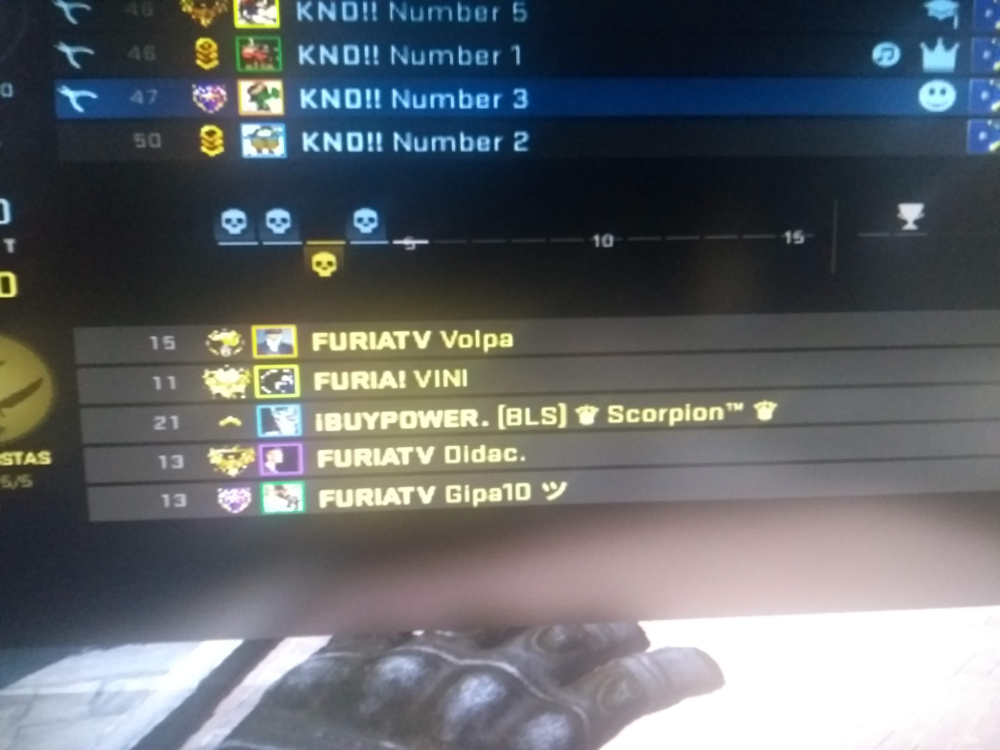

Hello there! Here is my website, it's like a CV but I will put anything that cross my mind here.
As Heraclitus once said: "No man ever steps in the same river twice, for it's not the same river and he's not the same man". So, i'm constantly changing. Anyways, I'm a person that really enjoy informatics and computer science in general - since computer eletronics, computer architecture (how these two things are connected? so awesome!), softwares and this kind of things, in a pyramidal way of abstraction level. All my life I was really into games and computers - I remember that I used to play Super Bomberman 3 (or it was 5, can't remember) when I was 4 years old, and I used to get very mad when my parents stopped me from playing after 10pm.
Anyway, going back, I'm currently studying Information Technology at Universidade Federal do Rio Grande do Norte, which is a bachelor degree. I also have a technical course Rio Grande do Norte, which was my first official approach to the academic world. As you might see, I can talk in english pretty well, but my native language it's Portuguese (of course, i'm from Brazil, duh!). I've tried to learn German, but at this moment I only know how to say hello and how many years old I am: "Hallo! Ich bin neunzehn Jarhe alt." (pretty impresive, huh?)
Anyway (remember to change this word, i've used a lot of times here), I'm a normal guy that just want to be myself, hang out with some friends sometimes, get to know new things and experiences, and enjoy life. If you read it untill here, congrats. You won a candy! Or a cookie, depends on this method of computers storing data, something like that. You can know more about me here, or you can continue reading the page. Have a great day!
Check it out my Enigma Machine that I've made with python. It was really nice to work on it: here!
As I said, I play games since I was young. Nowdays, I'm pretty confident to say that Counter-Strike: Global Offensive (CS:GO) is my beloved one. Don't get me wrong, League of Legends and these other games are pretty fun too. It's just because CS is in my veins. My higher rank was "Aguia 2" (which is Eagle II rank or the third to last rank on CS) playing with my friends, who were pretty competitive too. Unfornately, I don't have a picture of that moment, but I do have when I was Eagle I:
That's right. In a normal and beautiful day of my pandemic life, I started a matchmaking with my friends, around 3:00 am. And guess what? We faced Vini (at that time he was playing for Furia) and Léo Ramos, from the Supercombo band (brazilian famous band). It was shocking and amazing. Unfornately, they couldn't sign our profiles, but we've taken screenshots from the moment. :D
This website is inspired on my teacher's - I really enjoy this plain style type of website. You can find it here: tsouanas.org.